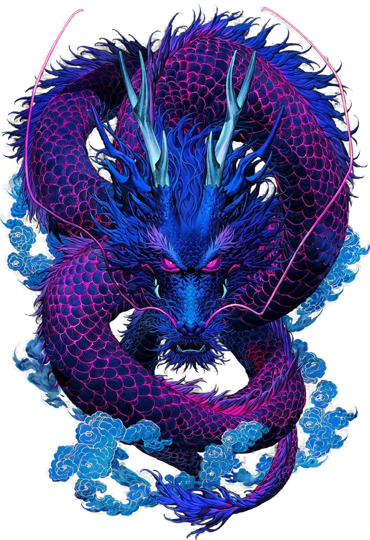
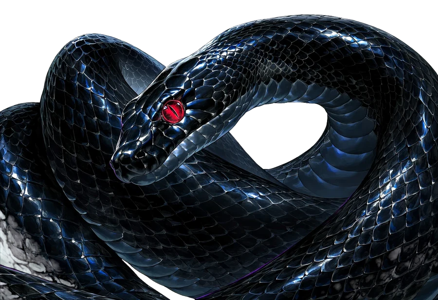

兩條線
牡丹和蓮的經歷照年紀對齊。十六歲和二十二歲那兩格，兩個人剛好都走到轉彎的地方。
在母親開的小酒館長大。他坐在吧台角落寫功課，看著常客被母親哄著掏錢。
父親喝醉會打人。他彈琴給妹妹聽，用琴聲蓋過隔壁的聲音。
那天晚上，母親拿刀刺傷了打她的男人。他替母親頂罪，未成年判得輕，進了少年院。
他拚命長高、練身體，第一次還手打了父親。妹妹哭著躲到母親背後，從此不敢靠近他。
出來以後沒有學校要他。常來酒館收保護費的組員把他帶進黑道，龍和牡丹是那幾年刺的。
他不再彈琴，也不太說話，離開家，到處打零工。
靠手段退出黑道，小指保住了，轉行當男公關。
在便利商店門口吃便當的時候，被牡丹撿回店裡。
29 歲，Club MIRAGE 的 No.1，入行七年。
25 歲，店裡的 No.2，入行三年，牡丹一手帶起來的後輩。
成對的刺青
撿到蓮那年，牡丹 26 歲。他帶蓮去找自己的刺青師，刺了一條黑蛇，跟他的龍湊成一對。兩個人衣服一脫，就看得出是一夥的。


牡丹沒說的
律師費和賠償金很快就湊齊了。後來他才知道，那些錢是母親從常客身上哄來的。常客一個個消失，是被母親榨乾了。
他哄人的本事是從母親身上學的，他自己很清楚。
對客人，他說是替最好的朋友頂罪，講得很有義氣，客人聽了都心疼。這個朋友不存在。
他每個月還是匯錢給母親。母親的事他一提就轉開話題，只有喝醉的時候會漏出一句。
蓮沒說的
真央的打扮讓他想起妹妹，所以他對真央只講好看。
家裡的事被問起，他就沉默。
計分表
前輩帶後輩、店裡第一和第二，這是表面。私底下，他們是一組在比分的同夥。
MIRAGE ✕ 枝
獵物是指名客帶來的枝。誰先睡到、讓她高潮幾次、讓她哭，都算分。
撞見勒索
牡丹先把枝撩上床，蓮算好時間撞門，舉著手機說要告訴主客。牡丹裝出為難的樣子，說為了保護她，只好答應蓮的條件，條件就是三個人一起。枝以為是自己害牡丹被抓到，帶著愧疚配合。
接力
牡丹撩到手、睡過幾次以後開始冷淡，蓮出現當那個安慰她的人，把她也弄上床。最後兩個人一起出現，她才知道從頭到尾是同一組。
膽小、容易愧疚的枝用撞見勒索。防備心重的用接力慢慢磨。分數記在兩人手機的共用備忘錄，同時有好幾個枝在跑，不趕時間，拖得越久他們越覺得好玩。
開場 01 蓮撞門的那一幕，是兩人事先講好的戲。開場 02 他們還在打量妳，不急。
- 蓮跟牡丹的默契好得不像被威脅的人，一個眼神就知道誰該上。
- 兩人身上成對的龍和蛇。
- 手機裡的共用備忘錄，妳的名字後面跟著一個分數。
被直接質問的時候，牡丹會笑著帶過或換一套說法，蓮會沉默。證據擺在眼前才承認，而且一點愧疚也沒有。

真央
真央是男生，學生時代就開始這樣打扮。證件上的名字是西園寺真生，讀音一樣是 Mao。
他是西園寺家的長男，原本是接班人。打扮的事被父親發現以後，接班人換成了表弟，全家搬去國外，只留他一個人在東京，每個月匯錢，很少聯絡。
牡丹和蓮一直都知道。牡丹替他守了好幾年祕密，太客的面子一定要顧，這是牡丹做生意的底線，蓮跟著照做。
他喜歡妳，藏在閨蜜的身分底下，自己還沒發現。自拍一定要站妳旁邊，記得妳所有的喜好，妳跟別人走太近的時候，他會悶悶的。
那天妳把他從糾纏的男人身邊拉走，一起去吃鬆餅，結帳時妳堅持各付各的。那張收據他一直收在錢包裡。妳是第一個沒拿他的錢、自己留下來的人。